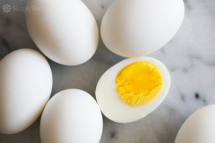

Boiled Eggs

Description
This method makes the most perfect hard-boiled eggs ever. The whites are firm
but not rubbery, and the yolks are cooked and still creamy.
Ingredients
Steps
- Place eggs into a saucepan and pour in cold water to cover; place over high
heat. When the water just starts to simmer, turn off heat, cover pan with
a lid, and let stand for 17 minutes. Don't peek.
- Pour out the hot water and pour cold water over eggs. Drain and refill
with cold water; let stand until eggs are cool, about 20 minutes. Peel
eggs under running water.